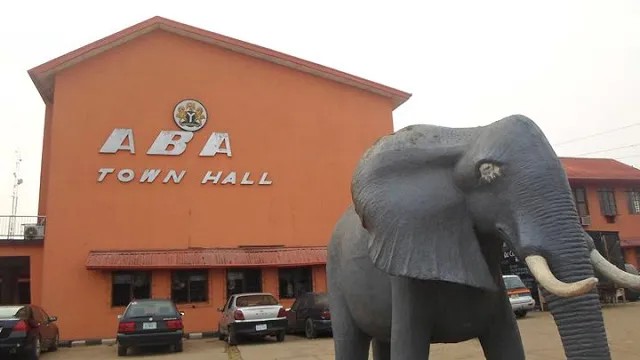
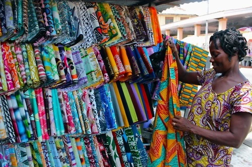
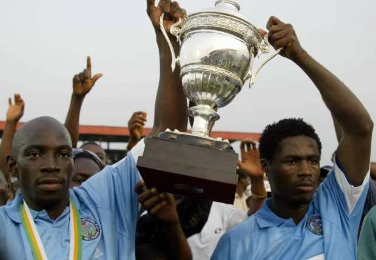
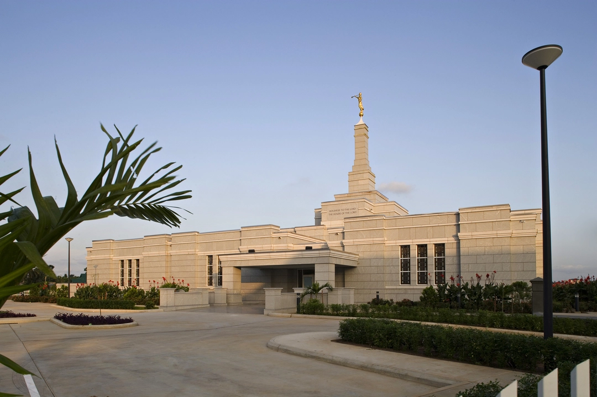

About Us
Enyimba City
Aba is a city in southeastern Nigeria and the commercial centre of Abia State. Upon the creation of Abia State in 1991, the old Aba township was divided into two local government areas, being Aba South and Aba North, while the suburban neighborhood of what was then known as Obioma Ngwa L.G.A. was divided into three L.G.A.s (namely Osisioma Ngwa, Obingwa and Ugwunagbo) for administrative convenience. Aba South is the main city centre of Aba and Abia State at large, being located on the Aba River. Aba is made up of many villages such as Aba-Ukwu, Eziukwu-Aba, Obuda-Aba, Umuokpoji-Aba and other villages that have been merged for administrative convenience
Economy
Aba is surrounded by oil wells, which separate it from the city of Port Harcourt. A 30 kilometres long pipeline provides Aba with gas from the Imo River natural gas repository. Its major economic contributions are textiles and palm oil, along with pharmaceuticals, plastics, cement, and cosmetics. This trade makes the Ariaria International Market the second largest market in Nigeria after the Onitsha Main Market. There is also a Heineken N.V., a glass-working company and brewery within the city. Aba is famous for its handicrafting. Aba is a commercial hub of eastern Nigeria. There are a few well known markets, such as Ariaria International Market, Ahia Ohuru Market, and Eziukwu Road Market, among others, that serve the entire region with wares, food, cosmetics, and other material goods.
Sports
Enyimba City as Aba is also referred to is home to Nigeria's most successful football club, Enyimba FC. Enyimba was a part of the Professional League inaugurated in 1990 but it wasn't until 2001 that the club's rise to fame began. The club won the Nigerian Championship title that year and that first silverware marked the beginning of the club's dominance in Nigerian football. Enyimba kept the Abia State flag flying high by winning the Nigerian Premier League in 2002 and 2003 but announced their arrival on the world stage by winning the African Champions League in 2003, becoming the first and only Nigerian club to do so. The club wrote its name in gold when it successfully defended the title in 2004 and have continued to enjoy huge success, competing strongly and regularly for domestic and international competitions and earning several best club awards.
Religion
In the late 1960s, a group of Nigerians discovered information on the Church of Jesus Christ of Latter-day Saints and established branches, but this Utah-based church did not establish any official presence in Nigeria until 1978. The first stake of this church in Nigeria (and in fact in all of Africa outside of South Africa) was established in Aba in 1988, with David W. Eka as president. There are presently five LDS stakes headquartered in Aba and the only LDS temple in Nigeria is located in the city, being the Aba Nigeria Temple. There are three other temples announced for Lagos, Benin City, and Eket.